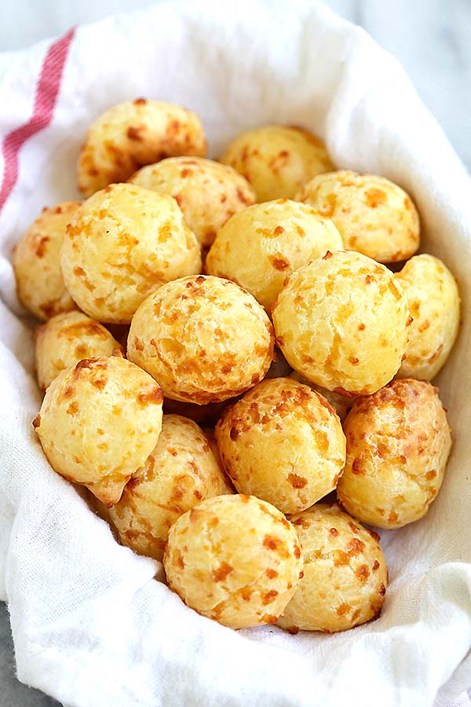

Brazilian Cheese Puffs

Description
Quick and easy brazilian cheese puffs recipe.
Get ready to lick your fingers and gain some weight!
Ingredients
- 170g flour
- 160ml milk
- 60ml Vegetable oil
- 1 egg
- 1 packet of baking soda
- salt to taste
- 25g Grana padano or parmesan
- 85g mozarella
Steps
- prepare the flour, sal and baking powder in a bowl
- Bring the milk and oil to a boil
- Pour the milk-oil mix into the flour and mix
- Add the egg and mix
- add the cheese and mix
- Spray oil into cupcake tray and fill each to half with the mixture
- Bake at 200 degree Celcius for 20 minutes
Home